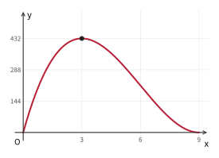
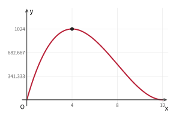
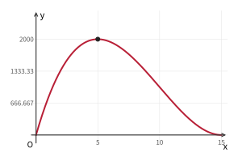

ホーム ＞ 数学II ＞ 微分法（接線・増減・極値）
別冊練習問題 9 の解答 箱の体積の最大（微分の応用）
(1) 1辺 \(18\) cm の正方形の厚紙の四隅から、1辺 \(x\) cm の正方形を切り取って折り曲げ、ふたのない箱を作る。体積が最大となる \(x\) と、そのときの体積を求めよ。
体積の式
\(0<x<9\)。
\[V=x(18-2x)^2=4 x^{3} - 72 x^{2} + 324 x\]増減
\[V'=12 x^{2} - 144 x + 324=12 \left(x - 9\right) \left(x - 3\right)\]
\(V'=0\) より \(x=3,\ 9\)。範囲内は \(x=3\)。

最大値
\[V(3)=432\]【答案】
\[x=3,\ V=432\]答
(2) 1辺 \(24\) cm の正方形の厚紙の四隅から、1辺 \(x\) cm の正方形を切り取って折り曲げ、ふたのない箱を作る。体積が最大となる \(x\) と、そのときの体積を求めよ。
体積の式
\(0<x<12\)。
\[V=x(24-2x)^2=4 x^{3} - 96 x^{2} + 576 x\]増減
\[V'=12 x^{2} - 192 x + 576=12 \left(x - 12\right) \left(x - 4\right)\]
\(V'=0\) より \(x=4,\ 12\)。範囲内は \(x=4\)。

最大値
\[V(4)=1024\]【答案】
\[x=4,\ V=1024\]答
(3) 1辺 \(30\) cm の正方形の厚紙の四隅から、1辺 \(x\) cm の正方形を切り取って折り曲げ、ふたのない箱を作る。体積が最大となる \(x\) と、そのときの体積を求めよ。
体積の式
\(0<x<15\)。
\[V=x(30-2x)^2=4 x^{3} - 120 x^{2} + 900 x\]増減
\[V'=12 x^{2} - 240 x + 900=12 \left(x - 15\right) \left(x - 5\right)\]
\(V'=0\) より \(x=5,\ 15\)。範囲内は \(x=5\)。

最大値
\[V(5)=2000\]【答案】
\[x=5,\ V=2000\]答